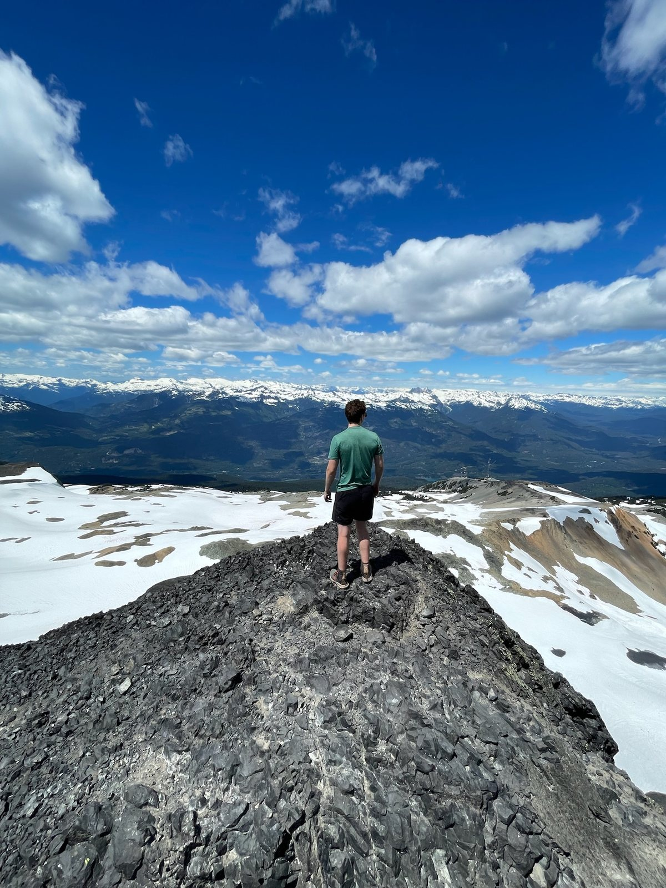
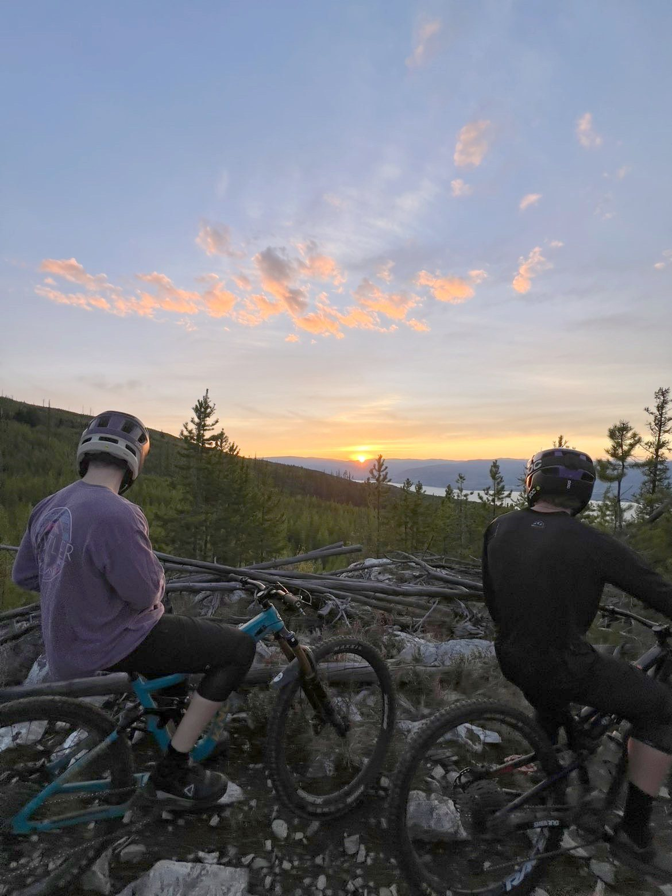
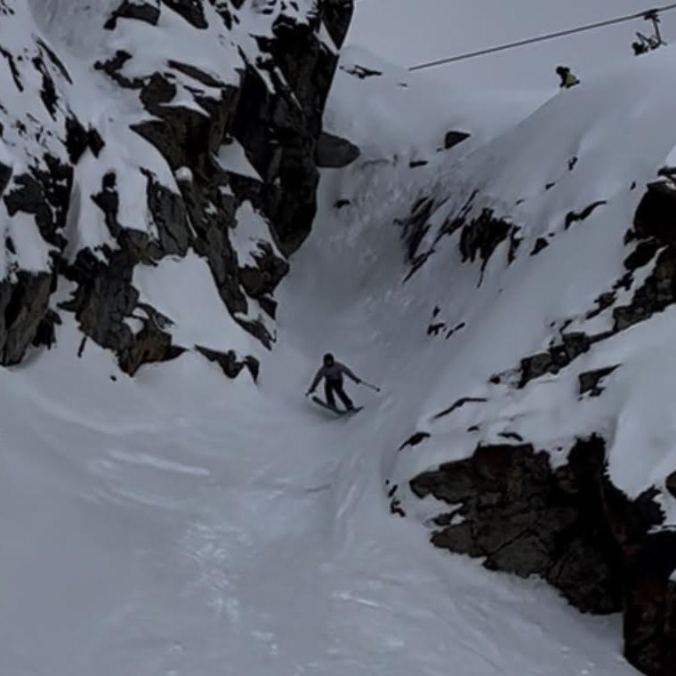
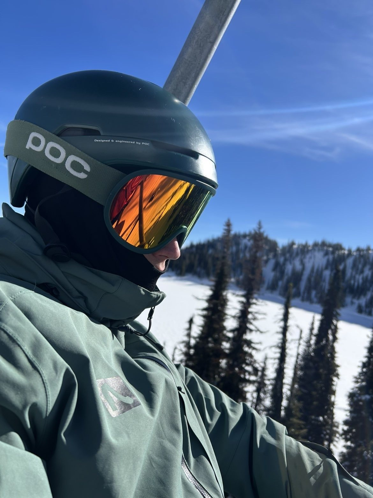
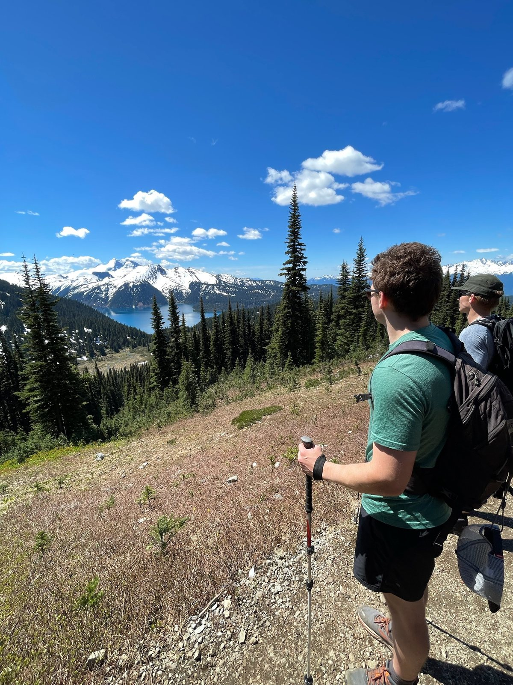
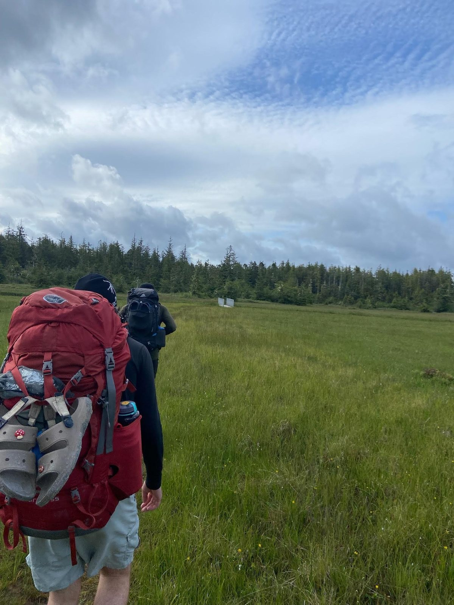

About
I'm a third-year Civil Engineering student at UBC Okanagan. A lot of my
project work so far has circled back to water, including an automated
irrigation system built around drought conditions in the Okanagan and a
pre-consultation study for a run-of-river hydroelectric site on a BC
river, alongside hands-on design and fabrication work.
Outside of coursework I've spent five years as a lifeguard and swim
instructor, which is where I learned to make decisions quickly under
pressure and explain things clearly to people of every age. I work well
on a team and bring a positive attitude and a strong work ethic to
whatever a project needs.
Projects
First-Year Project
Automated Irrigation System
A sprinkler system designed to cut water use on Okanagan farms during
drought conditions. We met with local farmers to choose components that
suited how they actually work. Soil monitors tracked ground saturation
to decide when watering was needed, and a humidity sensor anticipated
the next rainfall so the system could schedule around it. Everything
ran fully automated.
Second-Year Project
Run-of-River Hydroelectric Pre-Consultation Report
An assessment of a run-of-river hydroelectric system on a BC river,
looking at elevation drop, flow rate and site access. We weighed the
environmental impacts as well, including salmon migration and habitat
disruption. I co-wrote the technical report with a five-person team,
balancing engineering detail against keeping it readable for a
non-technical audience.
First-Year Project
Remote-Control Electric Bike
A small-scale electric bike, designed in AutoCAD and built from scratch.
The motor and steering column were manufactured and coded so the bike
could vary its speed and steer independently. We went through several
prototypes and testing phases to get reliability and safety right,
troubleshooting and refining the mechanical components as a team.
Experience
Lifeguard & Swim Instructor
North Vancouver Recreation Centre · 2021 – 2026
Applied risk assessment and safety protocols in high-pressure
situations, ran regular checks on pool safety equipment against
standards, and coordinated with the other guards to split tasks by
strengths. Five years of explaining things clearly to people of every
age.
Guest Experience
YYOGA Lonsdale · Summer 2026
Handled check-ins, questions and studio turnover during back-to-back
classes. Helped new members get set up with memberships and class
bookings, and kept the front desk running smoothly during busy
morning and evening peaks.
Volunteer & Leadership
North Shore Mountain Bike Association · Argyle Secondary
First aid responder at the NSMBA Fiver mountain bike races. Led and
organised group rides for the Argyle mountain bike team, and ran the
school chess club as president, organising tournaments and events.
Skills
Software
- AutoCAD
- SolidWorks
- ArcGIS Pro
- Java
- Microsoft Office
Technical
- Surveying (Total Station)
- CAD & Technical Drawing
- Prototyping & Fabrication
- Technical Writing
Certifications & Languages
- Standard First Aid, AED & CPR-C
- French (Dual Dogwood)
Outside Engineering
Most of what I do outside of school happens on a mountain.






- Skiing & Snowboarding
- Mountain Biking
- Dodgeball
- Piano — RCM Grade 8
- Saxophone